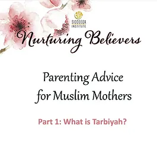

RESOURCES
FOR PARENTS

Nurturing Believers Part 1
What is Tarbiyah?
Nurturing Believers Part 2
Why is Tarbiyah Important?

Nurturing Believers Part 3
Why is Tarbiyah Important (Continued)?
Nurturing Believers Part 4
Love as the Basis for Tarbiyah
Nurturing Believers Part 5
Love as the Basis for Tarbiyah (Continued)
Nurturing Believers Part 6
The Power of Hugs
Nurturing Believers Part 7
Love for Allah as the Basis for Tarbiyah

Nurturing Believers Solutions # 1
How to Deal with Tantrums
Nurturing Believers Solutions # 1
How to Make a Child Apologize
Nurturing Believers Special # 1
Academic Pressure

Nurturing Believers Ramadan Edition
Ramadan Advice for Mothers of Young Children

Nurturing Believers Ramadan Activity # 1
Ramadan Kindness Packs

Nurturing Believers Ramadan Activity # 2
Iman Tree Craft Activity

Nurturing Believers Du'a Series Part 1
Why do we ask Allah for Everything?

Nurturing Believers Du'a Series Part 2
How do we Ask Allah?
Nurturing Believers Du'a Series Part 3
Etiquettes of Du'a

Nurturing Believers Du'a Series Part 4
Giving Importance to Du'a